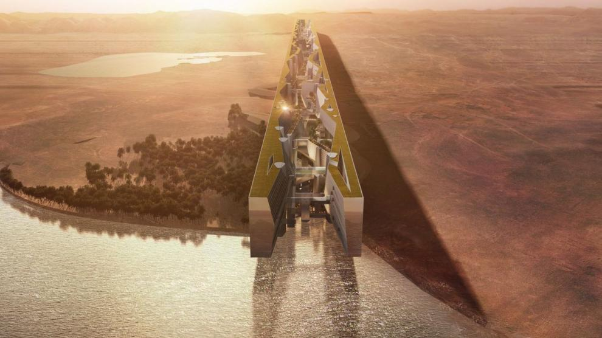

Estos son ejemplos de algunos paises que tienen proyectos que hacen especiales a sus ciudades.
| Ejemplos | ||
| Pais | Imagen de la ciudad | Explicacion |
| Holanda |  |
Holanda es un pais especial ya que el 60% de los ciudadanos usa la bicicleta cada dia, esta hace que no haya casi contaminacion en el aire |
| Arabia Saudita |  | En Arabia Saudita se esta empezando a construir una ciudad futuristica y autosuficiente, teoricamente dicha ciudad no malgastara recursos y sera autosuficiente |